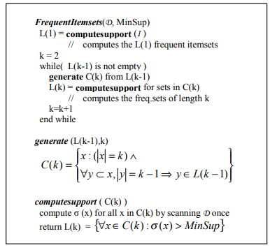

<html>
<head>
    <title>
        <meta charset="utf-8">
        <meta name="viewpoint" content="width-device-width,initial-scale=1.0">
        <link rel="stylesheet" href="style1.css">
    </title>
  </head>
    <body>
        <div>
            <center>
                <h3> Chapter V</h3>
                <h1>Parallel and Distributed<br>Data Mining through<br>Parallel Skeletons and<br>Distributed Objects</h1>
                <h6>Massimo Coppola<br>University of Pisa,Italy</h6>
                <h6>Macro Vanneschi<br> University of pisa, Italy</h6></center>
                <center><h2><strong>ABSTRACT</strong></h2></center>
    <p style= "text-align: justify;">
             <em>We consider the application of parallel programming environments to develop portable
                    and efficient high performance data mining (DM) tools. We first assess the need of
                    parallel and distributed DM applications, by pointing out the problems of scalability
                    of some mining techniques and the need to mine large, eventually geographically
                    distributed databases. We discuss the main issues of exploiting parallel and distributed
                    computation for DM algorithms. A high-level programming language enhances the
                    software engineering aspects of parallel DM, and it simplifies the problems of integration
                    with existing sequential and parallel data management systems, thus leading to
                    programming-efficient and high-performance implementations of applications. We
                    describe a programming environment we have implemented that is based on the
                    parallel skeleton model, and we examine the addition of object-like interfaces toward
                    external libraries and system software layers. This kind of abstractions will be included
                    in the forthcoming programming environment ASSIST. In the main part of the chapter,
                    as a proof-of-concept we describe three well-known DM algorithms, Apriori, C4.5, and
                    DBSCAN. For each problem,we explain the sequential algorithm and a structured parallel version, which is discussed and compared to parallel solutions found in the literature. We also discuss the potential gain in performance and expressiveness from
                    the addition of external objects on the basis of the experiments we performed so far. We
                    evaluate the approach with respect to performance results, design, and implementation
                    considerations.</em></p>
                
    <center><h2>INTRODUCTION</h2></center>
        <p>&nbsp;&nbsp;&nbsp;&nbsp;
                    The field of knowledge discovery in databases, or Data Mining (DM), has evolved in the recent past to address the problem of automatic analysis and interpretation of larger and larger amounts of data. Different methods from fields such as machine learning, statistics, and databases, just to name a few, have been applied to extract knowledge from databases of unprecedented size, resulting in severe performance and scalability issues. As a consequence, a whole new branch of research is developing that aims to exploit parallel and distributed computation in the computationally hard part of the mining task. The parallelization of DM algorithms, in order to find patterns in terabyte datasets in real-time, has to confront many combined problems and constraints, e.g., the irregular, speculative nature of most DM algorithms, data physical management, and issues typical of parallel and distributed programming, like load balancing and algorithm decomposi-tion. Fast DM of large or distributed data sets is needed for practical applications, so the quest is not simply for parallel algorithms of theoretical interest. To efficiently support the whole knowledge discovery process, we need high-performance applications that are easy to develop, easy to migrate to different architectures, and easy to integrate with other software. We foster the use of high-level parallel programming environments to develop portable and efficient high-performance DM tools. An essential aspect of our work is the use of structured parallelism, which requires the definition of the parallel aspects of programs by means of a fixed, formal definition language. High-level parallel languages of this kind shelter the application programmer from the low-level details of
                    parallelism exploitation, in the same way that structured sequential programming separates the complexity of hardware and firmware programming models from sequential algorithm design. Structured parallel languages are a tool to simplify and streamline the
                    design and implementation of parallel programs.</p>
        <p>&nbsp;&nbsp;&nbsp;&nbsp;&nbsp;&nbsp;
                A common issue in DM and in high-performance computing is the need to efficiently deal with a huge amount of data in complex memory hierarchies. Managing huge input data and intermediate results in the former case, and avoiding excessive amounts of communications in the latter case, highly complicate the algorithms and their implemen-tation. Even if current research trends aim at pushing more and more of the mining task into the database management support (DBMS), and at developing massively parallel DBMS support, the problem of scaling up such support beyond the limits of shared-memory multiprocessors is yet to be solved. In our view, high-level programming environments can also provide a higher degree of encapsulation for complex data management routines, which at run-time exploit the best in-core and out-of-core tech-niques, or interface to existing, specialized software support for the task. The enhanced interoperability with existing software is definitely a great advantage in developing high-performance, integrated DM applications. We will sustain our perspective by showing how to apply a structured parallel programming methodology based on skeletons to DM problems, also reporting test results about commonly used DM techniques, namely association rules, decision tree induction, and spatial clustering.</p>
        <p>&nbsp;&nbsp;&nbsp;&nbsp;&nbsp;&nbsp;
                In the first part of the chapter, we provide a background about parallel DM and parallel programming. The following section analyzes the general problems of DM algorithms, discussing why parallel and distributed computation are needed, and what are the advantages and issues they bring us. The integration issues with other applica-tions and with DBMS supports are especially important. Two sections recall the structured parallel programming approach and its application within the skeleton language of the SkIE environment. One more section is devoted to the problems coming from explicit management of the memory hierarchy. The first part of the chapter ends with the proposal of a common interface from parallel applications to external services, based on the object abstraction. We discuss the advantages that this new feature brings in terms of enhanced modularity of code, and the ability to interface with different data management software layers. The experiences made with the development of SkIE and of this kind of language extensions will be used in the design of the second-generation structured parallel language called ASSIST.</p>
        <p>&nbsp;&nbsp;&nbsp;&nbsp;&nbsp;&nbsp;
                In the second part of the chapter, we show three well-known DM algorithms and their skeleton implementation. We discuss association rule mining, classification,and clustering in three sections, according to a common presentation outline. We define each one of the DM problems, and we present a sequential algorithm that solves it. They are respectively Apriori, C4.5, and DBSCAN. We explain how the algorithm can be made parallel and its expected performance, discussing related approaches in the literature. We present skeleton structures that implement the parallel algorithm and describe its characteristics. The structured parallel C4.5 also uses a first prototype of external object library. A final section reports test results performed with real applications implemented with SkIE over a range of parallel architectures. To assess the performance and portability aspects of the methodology, we discuss the development costs of the prototypes. We conclude by pointing out future developments and open research issues.</p> 
            <p></p>
            
<center><h2>PARALLEL AND DISTRIBUTED DATA MINING</h2></center>
    <p>&nbsp;&nbsp;&nbsp;&nbsp;&nbsp;&nbsp;
        The need for high-performance DM techniques grows as the size of electronic archives becomes larger. Some databases are also naturally distributed over several different sites, and cannot always be centralized to perform the DM tasks for cost reasons or because of practical and legal restrictions to data communication. <em>Parallel data mining</em> (PDM) and <em>distributed data mining </em>(DDM) are two closely related research fields aiming at the solution of scale and performance problems. We summarize the advantages they offer, looking at similarities and differences between the two approaches.</p>
    <p>&nbsp;&nbsp;&nbsp;&nbsp;&nbsp;&nbsp;
        PDM essentially deals with parallel systems that are tightly coupled. Among the architectures in this class, we find <em>shared memory multiprocessors</em> (SMP), distributed memory architectures, clusters of SMP machines, or large clusters with high-speed interconnection networks. DDM, on the contrary, concentrates on loosely coupled systems such as clusters of workstations connected by a slow LAN, geographically distributed sites over a wide area network, or even computational grid resources. The common advantages that parallel and distributed DM offer come from the removal of sequential architecture bottlenecks. We get higher I/O bandwidth, larger memory, and Parallel and Distributed Data Mining computational power than the limits of existing sequential systems, all these factors leading to lower response times and improved scalability to larger data sets. The common drawback is that algorithm and application design becomes more complex in order to enjoy higher performance. We need to devise algorithms and techniques that distribute the I/O and the computation in parallel, minimizing communication and data transfers to avoid wasting resources. There is of course a part of the theory and of the techniques that is common to the distributed and parallel fields.</p>
<p>&nbsp;&nbsp;&nbsp;&nbsp;&nbsp;&nbsp;
    In this view, PDM has its central target in the exploitation of massive and possibly fine-grained parallelism, paying closer attention to work synchronization and load balancing, and exploiting high-performance I/O subsystems where available. PDM applications deal with large and hard problems, and they are typically designed for ves.</p>
<p>&nbsp;&nbsp;&nbsp;&nbsp;&nbsp;&nbsp;
    By contrast, DDM techniques use a coarser computation grain and loose hypoth-eses on interconnection networks. DDM techniques are often targeted at distributed databases, where data transfers are minimized or replaced by moving results in the form of intermediate or final knowledge models. A widespread approach is independent learning integrated with summarization and meta-learning techniques. The two fields of PDM and DDM are not rigidly separated, however. Often the distinction between fine-grained, highly synchronized parallelism, and coarse-grained parallelism gets blurred,
depending on problem characteristics, because massively parallel architectures and large, loosely coupled clusters of sequential machines can be seen as extremes of a range of architectures that have progressively changing nature. Actually, high-performance computer architectures become more and more parallel, and it is definitely realistic to study geographically distributed DDM algorithms where the local task is performed by a PDM algorithm on a parallel machine </p>
    <h3>Integration of Parallel Tools into Data Mining<br>Environments</h3>
            <p>&nbsp;&nbsp;&nbsp;&nbsp;&nbsp;&nbsp;It is now recognized that a crucial issue in the effectiveness of DM tools is the degree
of interoperability with conventional databases, data warehouses and OLAP services. Maniatty and Zaki (2000) state several requirements for parallel DM systems, and the issues related to the integration are clearly underlined. They call <em>System Traarency</em> the ability to easily exploit file-system access as well as databases and data warehouses. This feature is not only a requirement of tool interoperability, but also an option to exploit
the best software support available in different situations. Most mining algorithms, especially the parallel ones, are designed for <em>flat-file mining</em>. While this simplification eases initial code development, it imposes an overhead when working with higher-level
data management supports (e.g., data dumping to flat files and view materialization from
DBMS). Industry standards are being developed to address this issue in the sequential
setting, and research is ongoing about the parallel case (see for instance the book by
Freitas and Lavington, 1998). We can distinguish three main approaches:
    <li> &nbsp;&nbsp;Development of DM algorithms based on existing standard interfaces(e.g., SQL).Many algorithms have been rewritten or
    <br>&nbsp;&nbsp;&nbsp;&nbsp;&nbsp;&nbsp;&nbsp;designed to work by means of DBMS primitives.DBSCAN is designed assuming the use of a spatial database system.</li>  
    <li> &nbsp;&nbsp;Development of a few new database-mining primitives within the frame of standard DBMS <br>&nbsp;&nbsp;&nbsp;&nbsp;&nbsp;&nbsp;&nbsp;languages(a crucial issue is the expressive power that we may gain or lose)</li>
    <li> &nbsp;&nbsp;Design of dedicated, possibly parallel mining interfaces to allow tight integration of the mining process with the data management.</li>
    <p>&nbsp;&nbsp;&nbsp;&nbsp;&nbsp;&nbsp;
        Pushing more of the computational effort into the data management support means exploiting the internal parallelism of modern database servers. On the other hand, scalability of such servers to massive parallelism is still a matter of research. While integration solutions are now emerging for sequential DM, this is not yet the case for parallel algorithms.</p>
    <p>&nbsp;&nbsp;&nbsp;&nbsp;
        The bandwidth of I/O subsystems in parallel architectures is theoretically much higher than that of sequential ones, but a conventional file system or DBMS interface cannot easily exploit it. We need to use new software supports that are still far from being standards, and sometimes are architecture-specific. Parallel file systems, high-perfor-mance interfaces to parallel database servers are important resources to exploit for PDM. DDM must also take into account remote data servers, data transport layers, computa-tional grid resources, and all the issues about security, availability, and fault tolerance that are commonplace for large distributed systems. Our approach is to develop a parallel programming environment that addresses the problem of parallelism exploitation within algorithms, while offering uniform interfacing characteristics with respect to different software and hardware resources for data management. Structured parallelism will be used to express the algorithmic parallelism, while an object-like interface will allow access to a number of useful services in a portable way, including other applications and CORBA-operated software.</p>
            
    <center><h3>STRUCTURED PARALLEL PROGRAMMING</h3></center>
            <p>&nbsp;&nbsp;&nbsp;&nbsp;&nbsp;Parallel programming exploits multiple computational resources in a coordinated
effort to solve large and hard problems. In all but the really trivial cases, the classical problems of algorithm decomposition, load distribution, load balancing, and communi-cation minimization have to be solved. Dealing directly with the degree of complexity given by communication management, concurrent behavior and architecture character-istics lead to programs that are error prone, difficult to debug and understand, and usually need complex performance tuning when ported to different architectures. The <em>restricted</em>
approach to parallel programming takes into account these software engineering issues
(Skillicorn & Talia, 1998). Restricted languages impose expressive constraints to the
parallelism allowed in programs, which has to be defined using a given formalism.
Requiring the explicit description of the parallel structure of programs leads to enhanced
programmability, to higher semantics clearness, and to easier correctness verification.
Compilation tools can take advantage of the explicit structure, resulting in more efficient
compilation and automatic optimization of code. Porting sequential applications to
parallel can proceed by progressive characterization of independent blocks of operations
in the algorithm. They are moved to separate modules or code sections, which become
the basic components of a high-level description. Prototype development and refinement
is thus much faster than it is with low-level programming languages.</p>
            <p>&nbsp;&nbsp;&nbsp;&nbsp;&nbsp;The SkIE programming environment (Vanneschi, 1998b) belongs to this line of
research. There is, of course, not enough space here to describe in full detail all the
characteristics of the programming environment, which builds on a research track about
structured parallel programming, so we will only outline its essential aspects and the
development path that we are following. SkIE aims at easing parallel software engineering
and sequential software reuse by facilitating code integration from several different host
languages.</p>
            <p>&nbsp;&nbsp;&nbsp;&nbsp;&nbsp;The parallel aspects of programs are specified using a skeleton-based high-level
language, which is the subject of the next section. The key point is that parallelism is
essentially expressed in a declarative way, while the sequential operations are coded
using standard sequential languages. This approach preserves useful sequential soft-ware tools and eases sequential software conversion and reuse, while keeping all the advantages of a structured parallel approach.</p>
<p>&nbsp;&nbsp;&nbsp;&nbsp;&nbsp;Parallel compilation is performed in a two-phase fashion, with global optimizations
and performance tuning at the application level performed by the parallel environment,
and local optimizations introduced by sequential compilers. The low-level support of
parallel computation is based on industry standards like MPI, to ensure the best
portability across different architectures.</p>
                        
    <h3>The Skeleton Model in SkIE</h3>
            <p>&nbsp;&nbsp;&nbsp;&nbsp;&nbsp;SkIE-CL, the programming language of the SkIE environment, is a coordination
language based on parallel skeletons. The parallel skeleton model, originally conceived
by Cole (1989), uses a set of compositional building blocks to express the structure of
parallel code. Skeleton models have been subsequently exploited in the design of
structured parallel programming environment; see for instance the work of Au et al.
(1996), or that of Serot, Ginhac, Chapuis and Derutin (2001). A coordination language
allows the integration of separately developed software fragments and applications to
create bigger ones. In SkIE-CL, this approach is applied to the sequential portion of
algorithms, and it is combined with the structured description of parallelism given by
skeletons. As shown in Danelutto (2001), skeletons are close to parallel <em>design patterns</em>,
as both provide solutions to common problems in term of architectural schemes. Some
of the main differences are that skeletons are more rigidly defined and paired with specific
implementation solutions (usually called templates), while design patterns are more like
recipes of solutions to be detailed. As a result, skeleton programming languages are more
declarative in style, while existing languages based on design patterns provide a number
of generic classes and objects to be instantiated and completed, thus requiring at least
partial knowledge of the underlying software architecture.</p>
           <p> &nbsp;&nbsp;&nbsp;&nbsp;&nbsp;A program written in SkIE-CL integrates blocks of sequential code written in several
conventional languages (C and C++, various Fortran dialects, and Java) to form parallel
programs. The skeletons are defined as language constructs that provide the parallel
patterns to compose the sequential blocks. The basic parallel patterns are quite simple
because skeletons, and SkIE skeletons in particular, can be nested inside each other to
build structures of higher complexity. The interfaces between different modules are given
by two in and out lists of data structures for each module. These defined interfaces are
the only mean of interaction among different modules. Each parallel module specifies the actual data that are passed to the contained modules, and the language support handles
all the details of communication, synchronization and concurrency management. This is
especially important in the general case, when modules receive a stream of data structures
and have to perform their computation over all the data. The general intended semantics
of the SkIE skeletons is that the overall computation is performed in a data-flow style,
each module beginning its work as soon as its input is available, and starting a new
               computation as soon as new input data arrives.</p>
            <p> &nbsp;&nbsp;&nbsp;&nbsp;&nbsp;SkIE skeletons are represented in Figure 1, both as basic parallel communication
schemes and as simple code fragments in the SkIE syntax. The in/out interfaces of some
of the examples are instantiated to basic type definitions to show how the various
skeletons use their parameters. Lists of parameters of C-like, user-defined types are
allowed in the general case. The simplest skeleton is the <em>seq</em>, whose purpose is to contain
the definition and the interfaces of a fragment of serial code. Almost obviously, the <em>seq</em>
is the only skeleton that cannot contain other skeletons. In Figure 1, we identify a <em>seq</em>
module with a sequential process communicating with other ones by means of channels.
We explicitly note that the graphical representation abstracts from the actual implementation of the skeleton on a particular hardware. Viewing sequential blocks and interfaces as processes and channels is a useful concept to intuitively understand the behavior of
the parallel program, but doesn’t constrain the program implementation devised by the compiler.</p>
<p> &nbsp;&nbsp;&nbsp;&nbsp;&nbsp;SkIE provides with skeletons that model the two basic classes of parallel computations, namely, task parallel computations and data parallel computations. We talk about task parallelism and <em>streams</em> of tasks when a series of input elements or independent computation results flow from one module to a different one. The data-parallel skeletons rely instead on explicit decomposition and composition rules to split the computation of a large data structure into an organized set of sub-computations, and to compose the results back into a new structure. We call computational grain the size of the tasks we distribute to other processors for parallel computation. A small grain can lead to excessive overhead. In the case of the farm and other stream-parallel skeletons, packing a number of tasks together for communication optimizes the grain, enhancing the computation/communication ratio.
<p> &nbsp;&nbsp;&nbsp;&nbsp;&nbsp;The <em>pipe</em> skeleton defines the basic pattern of pipeline functional evaluation over
a stream of tasks. Given a set of modules (of arbitrary internal complexity), their pipeline composition evaluates a functional composition <em> f(g(h...(input)))</em>. The <em>f,g,h…</em> functions over different elements of the input are evaluated in parallel in an assembly-line
fashion. A nested module defines each function. A stage of the pipe sends its results to
the next one as soon as it finishes its computation. The general syntax of the pipe
construct is shown in Figure 1. This general form obeys the constraint that the output
of a stage (the out parameters of the module for that stage of the pipe) is the input of the
following stage. The <em>farm</em> skeleton expresses a load-balanced replication of a functional
module <em>W</em>, each copy separately performing the same computation over different tasks
of the input stream. The type of the in and out parameters of the contained worker module
must be the same <em>farm</em> ones. The execution order is assumed to be irrelevant; incoming
tasks are accepted as soon as a worker module is free of computation. The implementation
of the farm skeleton in SkIE can also exploit other compile and run-time optimizations, like
buffered communications and computation grain tuning. The <em>loop</em> skeleton defines
  <p class="figure"><em>Figure 1: Some of the parallel skeletons available in SkIE, their graphical representation
and concrete syntax. Examples of simple data types inside interface definitions, in place
of full parameter lists.</em></p>

            <center>
            
            </center>
            <p>cyclic, eventually interleaved dataflow computations. The nested <em>body</em> module repeatedly computes all the tasks that enter the <em>loop</em>. A feedback declaration defines the mapping among the in and out parameters when tasks are sent to the loop entry point. Interleaving of different computation is supported and is dealt with by the language support. Tasks leave the <em>loop</em> as soon as they satisfy the condition evaluated by the
                sequential module <em>halt</em>. In Figure 1 ,we show the <em>while</em>-like variant of <em>loop</em>, the <em>do-until</em> and <em>for</em> versions differing only in the way the halt condition is evaluated</p>
            <p> &nbsp;&nbsp;&nbsp;&nbsp;&nbsp;The <em> map</em> skeleton performs data parallel computations over multidimensional
arrays. SkIE defines a specific syntax (which we don’t describe here) to express a set of
useful decomposition rules for the input structure, also including several kinds of
stencils. The data structure is thus decomposed and distributed to a set of virtual
processors (VP) modules, in a way that allows them to compute independently. The
output of the VPs is then recomposed to a new structure, which is the output of the<em> map</em>.
In the example, we show the syntax for distributing an array of integers one element per
VP, and then collecting back an array of the same size. For the sake of conciseness, we
                skip the formal description of the other data-parallel skeletons <em>(reduce and comp).</em></p>
            
        <h3>Memory Hierarchies</h3>
            <p>&nbsp;&nbsp;&nbsp;&nbsp;&nbsp;All modern computers employ a memory hierarchy to optimize the average memory
access time. Programming models usually hide all the details of memory hierarchy, and
intuitive understanding of program complexity relies on a uniform memory access cost.
Real experience and theoretical results show that several common computational tasks
have very different costs if we take into account external memory references, and very
large constant terms suddenly creep in as soon as the data size exceeds the size of a
memory level. When data structures do not fit in main memory, the oblivious resort to
virtual memory can cause severe latency and bandwidth degradation, especially for
random access patterns, because of the huge speed gap among main and mass memory.
External memory-aware computation models, algorithms, and data structures have been
designed to overcome the problem, appropriately exploiting core memory and the I/O
blocking factor to amortize the secondary memory accesses. A deep survey of the topic
                can be found in Vitter (2001).</p>
<p>&nbsp;&nbsp;&nbsp;&nbsp;&nbsp;The issue is clearly relevant for database and DM applications, which manage both
input and working data structures of huge size. On the other hand, computational models
and algorithms for parallel I/O exploitation have been developed too, in the effort to solve
larger and larger problems. All these solutions can be quite complex, having to match the
algorithm structure to the constraints of efficient utilization of different levels of memory.
In some cases, there is already a data management layer that can integrate these results
in a black-box fashion, as it happens with relational DBMS and GIS databases (Freitas
& Lavington, 1998). In the general case, new interfaces have been studied also to simplify
the implementation of external memory algorithms, and to exploit parallel I/O resources.
Both the black-box approach and the generic one can be useful for high-performance DM.
Efficient, tight integration with database, data warehouse, and data transport management services highly enhances flexibility and efficiency of the DM tools, because they
can easily benefit from any improvements of the underlying software levels. On the other
hand, new (parallel) DM applications often need to directly manage huge data structures,
and we want to exploit the same advanced techniques with the minimum programming
effort.</p>
            
    <h3>Skeletons and External Objects</h3>
            <p>&nbsp;&nbsp;&nbsp;&nbsp;&nbsp;In this section, we outline the reasons that led us to the addition of an external
objects (EO) abstraction to a high-level parallel language. The skeleton programming
approach allows us to express parallel programs in a simple, portable way. Parallel
applications need, however, to interface to hardware and software resources, and ideally,
we want this part of the program to enjoy the same degree of portability. But usually
access to databases, file systems, and other kinds of software services from within
sequential code is done differently, depending on the sequential language and the operating system.</p>
<p>&nbsp;&nbsp;&nbsp;&nbsp;&nbsp;We explore the option of developing an object-like interface used from within
parallel applications to access generalized external services. With external services, we
denote a wide range of different resources, and software layers, like shared memory and
out-of-core data structures, sequential and parallel file systems, DBMS and data
warehouse systems with SQL interface, and CORBA software components. These can
    be usefully exploited regardless of the configuration details of the parallel program.</p>
<p>&nbsp;&nbsp;&nbsp;&nbsp;&nbsp;Support for object-oriented <em>external</em> libraries is already available or easily added to
different sequential languages. The parallel language recognizes parallel external <em>objects</em> as fully qualified types. The support of the language can accomplish set-up and
management tasks, such as locating or setting up servers and communication channels.
The sequential host languages can interact with the object support code as external
libraries with a fixed interface, and, of course, object-oriented languages like C++ and
Java can develop more complex functionalities by encapsulating the SkIE external objects
into user-defined ones.</p>
      <p>&nbsp;&nbsp;&nbsp;&nbsp;&nbsp;The definition of internally parallel objects is a responsibility that remains in the
hands of the language developer. It is a complex task, and it is subject to the constraints
that the implementation is portable and does not conflict with the parallel language
support. More complex objects with an explicitly parallel behavior can be defined in terms
of the basic ones, to ease parallel programming design. A first experiment in adding
external objects to the pre-existing SkIE language has looked at distributed data
structures in virtually shared memory (Carletti & Coppola, 2002). The results were
evaluated with the application to the parallel C4.5 classifier described in this chapter. The
long-term goal of the design is to develop objects that manage huge distributed data
structures by exploiting available shared memory or parallel file systems, and using the
best in-core and out-of-core methods according to problem size and memory space. The
management algorithms for this kind of task can become quite involved, having to deal
with multiple levels of external memories and problems of caching, prefetching, and
concurrent semantics. It is, of course, a complex and not yet portable design; however,
expressing parallel DM algorithms in such a level of detail makes them complex and nonportable as well, and the effort made is not easily reused. On the other hand, we want to
exploit this way the well-established standards we already mentioned, like CORBA
components and SQL databases, in order to enhance the integration of the highperformance core of DM application with existing software and data support layers. As
portability is needed with respect to both the hardware architecture and the software
layer that manages the data, we can profitably use object-oriented interfaces to hide the
          complexity of data retrieval.</p>
<center><h2>STRUCTURED PARALLEL DATA MINING<br>
ALGORITHMS</h2></center>
             <p>&nbsp;&nbsp;&nbsp;&nbsp;&nbsp;This second part of the chapter is devoted to the analysis of three parallel DM
applications developed using the SkIE environment, also including a distributed-tree
external object library in the case of C4.5. The descriptions of the problems are selfcontained, but we also suggest looking for more results and literature references in the
papers of Carletti and Coppola (2002) and Coppola and Vanneschi (2002). We will use the
                 symbol <em>D</em> to denote the input database. <em>D</em>is viewed as a square table of <em>N</em> records, which
are the rows, and where the number of fields in a record is a. By horizontal representation
(or partitioning), we mean that the input is represented (or partitioned) using a row-wise
database layout, keeping each record as a whole unit. In vertical representation, the input
is instead represented in terms of columns of data, each containing the values of
                 corresponding fields from different input records. An example of the two data representations is given in the next section about association rules.</p>
<h2>Association Rule Mining: Partitioned Apriori</h2>
            <p>&nbsp;&nbsp;&nbsp;&nbsp;&nbsp;The problem of association rule mining (ARM) was proposed back in 1993, and its
classical application is <em>market basket analysis</em>. From a sell database, we want to detect
rules of the form <em>AB ⇒ C </em>, meaning that a customer who buys both objects A and B also
buys C with some minimum probability. We refer the reader to the complete description
of the problem given in Agrawal, Mannila, Ramakrishnan, Toivonen, and Verkamo (1996),
while we concentrate on the computationally hard subproblem of finding <em>frequent sets.</em>
In the ARM terminology the database D is made up of transactions (the rows), each one
consisting of a unique identifier and a number of boolean attributes from a set<em> I.</em> The
                attributes are called <em>items,</em> and a <em>k-itemset </em>contained in a transaction <em>r </em>is a set of <em>k </em>items
that are true in <em>r</em>. The support σ(X) of an itemset X is the proportion of transactions that
contain X. Given D, the set of items I, and a fixed real number 0 < s <1,called <em>minimumsupport</em>
, the solution of the frequent set problem is the collection { } X | X ⊆ I,σ (X ) ≥ s
of all itemsets that have at least that minimum support. The support information of the
frequent sets can be used to infer all the valid association rules in the input. The power
set <em>P (I )</em> of the set of items has a lattice structure, which is naturally defined by the set
inclusion relation. In Figure 2, we see a simple representation of a lattice of all subsets
of {A,B,C,D}, with the itemset ABD and its subsets evidenced. A level in this lattice is
a set of all itemsets with equal number of elements. The minimum support property is antimonotonic in this lattice, i.e., it is preserved over decreasing chains:</p>
   
    &nbsp;&nbsp;&nbsp;&nbsp;&nbsp;&nbsp;
                        
 <p>&nbsp;&nbsp;&nbsp;&nbsp;&nbsp;To put the frequent set problem in the right perspective, we must remember that the
support is taken to be the probability of itemsets. Two interestingness measures for
association rules (in the form <em>A ⇒ B</em>, where A and B are generic itemsets) are defined from
itemset support, the confidence of a rule, which is the conditional probability of B given
A, and the support of a rule. It is easy to use the information about frequent sets to
compute all association rules that satisfy minimum significance requirements</p>
            <p class="figure"><em>Figure 2:Different representations for boolean transaction data. The lattice of
itemsets, with the subsets of frequent set ABD put in evidence.</em></p>
            
    <h4><em>Sequential Apriori</em></h4>
            <p>&nbsp;&nbsp;&nbsp;&nbsp;&nbsp;Computing the support count for a single itemset requires a linear scan of <em>D </em> . The
database is often in the order of gigabytes, and the number of potentially frequent
itemsets is  I 2, which easily exceeds the available memory. To efficiently compute the
frequent sets, their structure and properties have to be exploited. We classify algorithms
for ARM according to their lattice exploration strategy. Sequential and parallel solutions
differ in the way they arrange the exploration, in the fraction of the itemset lattice that
they actually have to explore, and in how they distribute the data structures to minimize
computation, I/O, and memory requirements. In the following we will essentially restrict
the attention to the Apriori algorithm and its direct evolutions.</p>
    <p>&nbsp;&nbsp;&nbsp;&nbsp;&nbsp;Apriori (see Figure 3) builds the lattice level-wise and bottom-up, starting from the 1-itemsets and using the fact that non-frequent itemsets cannot have frequent supersets
as a pruning heuristic. From each level Lk
 of frequent itemsets, a set of candidates Ck+1
is derived. For the sake of conciseness we give a declarative definition of the <em>generate</em>
and <em>computesupport</em> procedures in Figure 3, but clearly the actual algorithm implementation is critical for performance. The candidates are all the itemsets that satisfy the antimonotonic property, used as a filtering heuristic. The support for all the current
candidates is verified in a single scan of the input, extracting the next level of frequent
itemsets Lk+1 from the set of candidates. The Apriori algorithm is a breakthrough with
respect to a naive approach (the amount of work done for support computation is greatly
reduced), but some issues arise when applying it to huge databases. A linear scan of <em>D</em>is required for each level of the solution.</p>
            <p class="figure"><em>Figure 3: Apriori pseudo-code for frequent itemsets.</em></p>
            <center></center>
            <p> The computation can thus be slow, depending
on the maximum length of frequent itemsets in the input data. Apriori is based on the
assumption that itemsets in Ck
 are much fewer than all the possible k-itemsets, but this
is often false for k=2,3, because the pruning heuristic is not yet fully effective. If Ck
 is large
or doesn’t even fit in memory, computing the support values for the candidates becomes
quite hard.</p>
            <h4><em>Related Work</em></h4>
    <p>&nbsp;&nbsp;&nbsp;&nbsp;&nbsp;Some design choices mainly distinguish sequential and parallel algorithms for ARM. In the following, we mention the distinguishing features of the different algorithms.</p>
          
<li>&nbsp;&nbsp;The way data and candidates are partitioned and distributed. The data and
<br>&nbsp;&nbsp;&nbsp;&nbsp;&nbsp;&nbsp;&nbsp;candidate distribution schemes obviously interact with and constrain parallel work
<br>&nbsp;&nbsp;&nbsp;&nbsp;&nbsp;&nbsp;&nbsp;decomposition.<br>
• &nbsp;&nbsp;&nbsp;&nbsp;&nbsp;The lattice exploration approach. Most Apriori evolutions work level-wise, but the <br>&nbsp;&nbsp;&nbsp;&nbsp;&nbsp;&nbsp;&nbsp;lattice structure of the frequent itemsets can be also exploited using random or <br>&nbsp;&nbsp;&nbsp;&nbsp;&nbsp;&nbsp;deterministic sampling and graph properties to quickly gain knowledge of the <br>&nbsp;&nbsp;&nbsp;&nbsp;&nbsp;&nbsp;solution structure.<br>
• &nbsp;&nbsp;&nbsp;&nbsp;The horizontal or vertical approach to database representation. The transaction <br>&nbsp;&nbsp;&nbsp;&nbsp;&nbsp;&nbsp;records may be the basic elements, or we may use TID lists (lists of all identifiers <br>&nbsp;&nbsp;&nbsp;&nbsp;&nbsp;&nbsp;of transactions to which each item belongs). Different implementation solutions <br>&nbsp;&nbsp;&nbsp;&nbsp;&nbsp;&nbsp;depend on this choice; see for instance Savasere, Omiecinski and Navathe (1995),<br>&nbsp;&nbsp;&nbsp;&nbsp;&nbsp;&nbsp;and Zaki (2000).</li>
    <p>&nbsp;&nbsp;&nbsp;&nbsp;&nbsp;Following Agrawal and Shafer (1996), we can classify the parallel implementations
of Apriori into three main classes,<em> Count, Data, and Candidate Distribution,</em> according
to the interplay of the partitioning schemes for the input and the Ck
 sets.<em> Count Distribution </em>solutions horizontally partition the input among the processors, distributing the database scan for support computation. In order to compute global candidate
support counts for each new level of the solution, all the processors have to synchronize
and exchange support information with each other.<em> Data Distribution</em> solutions keep the
Ck
 set distributed, allowing the management of huge amounts of candidates. The
downside of this approach is the need to send local data to most of the processors, if not
to fully replicate the database, to let each processor compute the correct support of its
own candidates. The <em>Candidate Distribution </em>strategy tries to coordinately partition the
candidate sets and the input in order to minimize data communication and balance the workload. The approximate information needed to choose a good distribution is gathered in the first steps of the algorithm, or by analyzing a sample of the data.</p>
 <p>&nbsp;&nbsp;&nbsp;&nbsp;&nbsp;The three previous solutions share the level-by-level approach of Apriori. This usually involves keeping in memory a set of candidate itemsets with their support counts,
using data structures like the hash tree to encode part of the itemset lattice. Each node of the hash tree is labeled with an item, and the path to a node at level k corresponds to a k-itemset. Frequent itemsets are kept in the tree, exploiting the lexicographic order of
items and using hash tables at the nodes and additional pointers to reach an average access time proportional to the depth of the tree.</p>
            <p>&nbsp;&nbsp;&nbsp;&nbsp;&nbsp;When switching to a vertical data representation, the Apriori internal operations
can be rewritten into <em>TID-lists</em> intersections (see the example in Figure 2). The TID-list
for an itemset is the intersection of the lists of its items, and the support count is the length
of the list. List intersections can be computed efficiently, and also offer the advantage
of easily changing the lattice exploration strategy from breadth-first to a more general
one. Information on support counts of a few long itemsets can be exploited, in the first
part of the algorithm, to quickly compute an approximation of the frontier of the set of
frequent sets. Zaki (2000) applied similar techniques to the partitioning of 2-itemset TID
lists in order to enhance the locality of data access in parallel ARM computation.</p>
<h4><em>Parallel Partitioned Apriori</em></h4>
        <p>&nbsp;&nbsp;&nbsp;&nbsp;&nbsp;We studied the partitioned algorithm for ARM introduced in Savasere et al. (1995),
which is a two-phase algorithm. The data are horizontally partitioned into blocks that fit
inside the available memory, and frequent sets are identified separately in each block,
with the same relative value of s. It is easy to show that a frequent itemset in D must be
<em>locally </em>locally frequent in at least one of the partitions (the converse is not true, not all the
itemsets that are locally frequent are also frequent in the original dataset <em>D</em>).</p>
    <p>&nbsp;&nbsp;&nbsp;&nbsp;&nbsp;The algorithm, shown in Figure 4, is divided in two phases, the first one being to
solve the frequent set problem working in memory, separately for each block. Here
parallelism is exploited from all the independent computations. The union of the frequent
sets for all the blocks is a superset of the globally frequent sets. In a general case, the
information gathered so far is partial. It contains a certain amount of <em>false positives</em>
(itemsets that are only locally frequent in some of the blocks) and contains incomplete
support information for those frequent itemsets that are not locally frequent in every
partition (they are local false negatives in some blocks).</p>
             <p class="figure"><em>Figure 4: Pseudo-code of partitioned ARM with mapping to parallel modules.</em></p>
            <center></center>
            <p>&nbsp;&nbsp;&nbsp;&nbsp;&nbsp;The second phase is a linear scan of <em>D</em> to compute the correct support counts for
all the elements in the approximate solution, and to discard false positives. Here
parallelism on different blocks can be exploited too, if we sum support information once
at the end of Phase II. As in the work of Savasere et al., we obtain the frequent sets with
only two I/O scans. Phase II is efficient, and so the whole algorithm, if the approximation
built in Phase I is not too coarse, i.e., the amount of false positives is not overwhelming.
The degenerate behavior happens if the data distribution is too skewed, which we can
often avoid by a preliminary step of random data permutation. On the other hand, data
skew cannot generally be avoided if the input partitions are too small with respect to <em>D</em>.</p>
            <p>&nbsp;&nbsp;&nbsp;&nbsp;&nbsp;We have applied the two-phase partitioned scheme without the vertical represen-tation described in the original work. This sacrificed some advantages of the vertical
representation, but allowed us to reuse an existing sequential implementation of Apriori
as the core of the first phase. This parallel-partitioned scheme is more asynchronous and
efficient than parallel Count Distribution, because it avoids both I/O and global commu-nication before each new level of the solution. Nevertheless, our implementation
asymptotically behaves like Count Distribution with respect to the parameters of the
algorithm. It is quite scalable with the size of <em>D</em> , but cannot deal with huge candidate or
frequent sets, i.e., it is not scalable with lower and lower values of the s support parameter.
Its essential limits are that both the intermediate solution and a block of data have to fit
in memory, and that too small a block size causes data skew. The clear advantages are
that almost all work is done independently on each partition, with two I/O passes, and
that the scheme can also exploit parallel I/O. We will now show that the algorithm
structure can be easily mapped to a skeleton composition, producing an efficient
implementation.</p>
            <h4><em>Skeleton Implementation</em></h4>
            <p>&nbsp;&nbsp;&nbsp;&nbsp;&nbsp;The structure of the Partitioned algorithm is clearly reflected in the skeleton
composition we have used, which is shown in Figure 5 and Figure 6. The two phases are
connected within a <em>pipe skeleton</em>. Since there is no parallel activity between them, they
are in fact mapped on the same set of processors. Phase II, if D is huge, can be easily
and usefully parallelized over separate partitions, too. The common internal scheme of
the two phases is a three-stage pipeline. The first module within the inner <em>pipe</em> reads the
input and controls the computation, generating a stream of tasks that are actually
partitions of the input data. The second module is a <em>farm </em>containing p <em>seq</em>modules
running the Apriori code. The internal results of Phase I are hash-tree structures
containing all the locally frequent sets. The third module contains sequential code to
perform a stream reduction over these results. They are summed up to produce a hash
tree containing the union of the local solutions. Phase II broadcasts the approximate
solution to all the workers at the beginning. The worker modules contain a simpler code
that only gathers support counts for the elements in the approximate solution. The results
are arrays of support values that are added together by a second stream reduction to
compute the global support for all the frequent itemsets.</p>
            <p>&nbsp;&nbsp;&nbsp;&nbsp;&nbsp;The skeleton structure described so far allows the application of two different I/O
schemes, from which we choose depending on the underlying architecture and on the
kind of database interface we want to exploit. It is important to note that the two phases
have the same structure and that the second begins after the completion of the first one.</p>
            <p class="figure"><em>Figure 5: SkIE code for the parallel APriori.</em></p>
            <center></center>
            <p class="figure"><em>Figure 6: Parallel structure of Partitioned Apriori.</em></p>
            
            <p>We can thus map them on the same set of processors to use the same I/O approach and
resources twice. If we cannot assume the availability of parallel, independent access to
disk-resident data, we use the sequential modules in the beginning of each phase to read
the data partitions and to distribute them to the following modules. This is the case if the
interprocess transfer bandwidth is higher than the I/O one (as in some SMP and parallel
architectures), or if we have no other choice than a file system or a database server that
            provides single-point access to the data for architectural or performance reasons. This
approach is scalable as long as the single point of I/O is not a bottleneck.</p>
            <p>&nbsp;&nbsp;&nbsp;&nbsp;&nbsp;The case is different if we can afford to replicate the data, exploiting massively
parallel I/O to local disks, or if we can access the data from multiple points with no heavy
performance penalty, by means of a parallel file system, for instance. Data replication may
be needed if the network performance is inadequate to that of the processors and local
disks, e.g., on a cluster of workstation. We can implement distributed I/O directly in the
<em>farm </em>workers, using the first sequential module only as supervisor. We still profit from
the load balancing properties of the <em>farm </em>skeleton, which takes care of work distribution
and synchronization, but we avoid the physical data transfer among distinct modules.
This second approach relies on distributed I/O capabilities, but it is much more scalable.</p>
            <h2>Classification: C4.5 and Tree Induction-Based</h2>
            <h2>Classifiers</h2>
            <p>&nbsp;&nbsp;&nbsp;&nbsp;&nbsp;Classification is one of the most important tasks in DM. The input database D is
a set of records called cases, each one having a fixed set of attributes. All the cases have
an assigned class label. A classification model is a knowledge model that describes
membership of cases to a class in terms of other attribute values. Each attribute, i.e., a
column in the data, is either continuous (a numeric value) or categorical (a label). The
class attribute is assumed to be categorical. Most classification models are both
descriptive and predictive, thus they can classify unlabelled data. We use an inductive
process to look for the model. It is a common practice to exploit part of the data, the
<em>training set</em>, to generate a model, and use the remaining data, the test set, to evaluate the
model by comparing the predicted class with the real one.</p>
            <p>&nbsp;&nbsp;&nbsp;&nbsp;&nbsp;Many widely used classifiers are based on <em>decision trees</em>, among them the C4.5
algorithm by Quinlan (1993). A decision tree (see Figure 7) recursively partitions the input
set until the partitions consist mostly of data from a same class. The root of the tree
                corresponds to all the input, and each <em>decision node</em> splits the cases according to some
test on their attributes. The leaves are class-homogeneous, disjoint subsets of the input.</p>
            <p>&nbsp;&nbsp;&nbsp;&nbsp;&nbsp;A path from the root to any given leaf thus defines a series of tests. All cases in the
leaf satisfy these tests, and they belong to a certain class (there are only two classes in
the example, Yes and Not). The tree describes the structure of the classes, and it is easy
to use to predict the class of new, unseen data.</p>
            <p>&nbsp;&nbsp;&nbsp;&nbsp;&nbsp;Apart from some implementation issues, the general form of the tree induction
process is mainly a divide-and-conquer (D&C) computation, proceeding from the root
and recursively classifying smaller and smaller partitions of the input. However, tree
induction-based classifiers differ in significant details, like the kind of tests that are used,
how they are chosen, what is the stopping criterion of the recursion (the homogeneity
condition), and how the data is actually partitioned. The C4.5 algorithm will be the
reference for our discussion.</p>
            <h4><em>Sequential C4.5</em></h4>
            <p>&nbsp;&nbsp;&nbsp;&nbsp;&nbsp;C4.5 is made up of two phases, the building one, which is the actual tree induction
process, and the pruning and evaluation phase. We will focus on the former as it is theactual model search, and because its sequential andparallel implementation for huge databases is challenging.</p>
            <p class="figure"><emp>Figure 7: Example of decision tree.</emp></p>
            <center></center>
            
            <p>&nbsp;&nbsp;&nbsp;&nbsp;&nbsp;Following the general scheme of tree induction, the building phase proceeds from
the root by choosing a new test at each node (step Div1 in Figure 8). C4.5 decision nodes
                employ tests over a single attribute. Boolean tests of the form <em> x< threshold </em> are used for
continuous attributes, while multiple-choice tests create a son node for each different
value of a categorical attribute. Each decision node thus splits its data into two or more
son nodes (steps Div3 or Div2, respectively). The test for a node is selected by evaluating
the Information Gain (IG) cost function over all the possible attributes. The IG is
essentially a measure of diversity of a set of values, used to recognize which attribute
best separates cases of current node into class-homogeneous subsets.</p>
            <p>&nbsp;&nbsp;&nbsp;&nbsp;&nbsp;Tree construction is recursive (steps Conq1, Conq3), and branch expansion stops
at nearly homogeneous, possibly empty partitions (step Conq2). The model search is
locally exhaustive, but globally greedy; no backtracking happens in the building phase.</p>
            <p>&nbsp;&nbsp;&nbsp;&nbsp;&nbsp;Each node split requires several operations on all the data contained in the local
partition, some of them to evaluate the IG, and other ones to split the data according to
the selected attribute. The tree itself is a compact knowledge model, but the data
partitions for a node can be as large as the whole input. Ensuring efficiency and locality
of data accesses is the main issue in building the decision tree. Assuming that the data
fit in memory, to evaluate the IG for a categorical attribute <em>A</em>, histograms of the couples
(class, <em>A</em>) in the current partition are computed. This operation requires O(<em>n</em>) operations
per column, where <em>n</em> is the size of current partition. IG computation for continuous
attributes needs the class column to be sorted according to the attribute. The cost of
repeated sorting (operations) at each node expansion accounts for most of the runningtime of the algorithm. Once the split test has been selected, a further step O(n) is required to partition the data accordingly.</p>
            <p class="figure"><emp>Figure 8: Pseudocode of C4.5, tree-building phase.</emp></p>
    <center></center>
            
            <p>&nbsp;&nbsp;&nbsp;&nbsp;&nbsp;The serial algorithm as described is not practically scalable. For out-of-core
partitions, the complexity given above is in terms of I/O operations and virtual memory
page faults. The in-core algorithm quickly becomes unusable, and explicit externalmemory solutions are needed to overcome the limitation. Sequential and parallel classifiers address the problem by using clever techniques to evaluate the IG, by turning to
less costly, possibly approximate cost functions, or by decomposing the computation
to reduce the amount of useless data transfers. In the original formulation of C4.5, the
selection of a continuous attribute for the split in step Div3 also requires a linear search
for a global threshold T, which is done over all the input data. This O(N) search clearly
breaks the D&C paradigm, both with respect to locality of data accesses and with respect
to the expected computation time of subproblems. However, the exact threshold value
<em>T</em> is not needed to split a node, because it is used only later, during the evaluation phase.
All the thresholds in the generated tree can be computed in an amortized manner at the
end of the building phase. As a consequence, locality of data access is enhanced, and
the computational cost of split operations lowers from to O (max (<em>N</em>, <em>n</em> log n)) to O(<em>n</em>
log <em>n</em>).</p>
            <h4><em>Related Work</em></h4>
            <p>&nbsp;&nbsp;&nbsp;&nbsp;&nbsp;Several different parallel strategies for classification have been explored in the
literature. Three of them can be considered as basic paradigms, which are combined and
specialized in real algorithms. <em>Attribute</em> parallelism vertically partitions the data and
distributes to different processors the IG calculation over different columns.<em>Data</em>
parallelism employs horizontal partitioning of the data and coordinates computation of
all processors to build each node. <em>Task</em> parallelism is the independent classification of
separate nodes and subtrees. These fundamental approaches may use replicated or
partitioned data structures, do static or dynamic load balancing and computation grain
optimization.</p>
            <p>&nbsp;&nbsp;&nbsp;&nbsp;&nbsp;We have seen that the computation of IG accounts for much of the complexity of
C4.5. Some alternative split evaluation functions have been proposed that do not require
the data to be sorted and to be memory-resident, but in the following, we will concentrate
on the works based on the same definition of information gain used in C4.5. Much of the
research effort has been made to avoid sorting the partitions to evaluate the IG and to
split the data using a reasonable number of I/O operations or communications. A common
variation is to use a vertical representation, each attribute stored in a separate data
structure, keeping the columns of data in sorted order. The drawback is that horizontal
partitioning is done at each node split, so most of the algorithm design is devoted to split
the data according to one column, while maintaining order information in the other ones.
Many parallel algorithms expand the classification tree breadth-first and employ a binary
tree classification model. Binary splits require some extra processing to form two groups
of values from each categorical attribute, but simplify dealing with the data and make the
tree structure more regular. The algorithms SLIQ and SPRINT use these two solutions
(Shafer, Agrawal & Mehta, 1996). ScalParC (Joshi, Karypis & Kumar, 1998) also builds
a binary tree breadth-first, but with a level-synchronous approach. It employs a custom
parallel hashing and communication scheme, reducing the memory requirements and the
amount of data transfers. ScalParC is memory-scalable and has a better average split
communication cost than the former algorithms, even if its worst-case communication
cost is O(<em>N</em>) for a whole level of the tree.</p>
            <h4><em>Skeleton Parallel C4.5</em></h4>
            <p>&nbsp;&nbsp;&nbsp;&nbsp;&nbsp;Our research has focused on developing a structured parallel classifier based on
a D&C formulation. Instead of balancing the computation and communications for a
whole level, we aim at a better exploitation of the locality properties of the algorithm. A
similar approach is the one reported in Sreenivas, AlSabti and Ranka (2001) for the parallel
CLOUDS algorithm. The sequential classifier CLOUDS uses a different and computationally
more efficient way of evaluating the split gain on numeric attributes, which results in
lower I/O requirements than other classifiers. Sreenivas et al. (2001) propose, as a general
technique for parallel solution of D&C problems, a mixed approach of data-parallel and
task-parallel computation. Substantially, in pCLOUDS, all the nodes above a certain size
are computed in a data-parallel fashion by all the processors. The smaller nodes are then
classified using a simple task parallelization.</p>
            <p>&nbsp;&nbsp;&nbsp;&nbsp;&nbsp;The problem of locality exploitation has also been addressed in Srivastava, Han,
                Kumar and Singh (1999) with a <em>Hybrid Parallelization</em>. A level-synchronous approach
is used here, but as the amount of communications exceeds the estimated cost of data 
                reorganization, the available processors are split in two groups that operate on separate
sets of subtrees.</p>
            <p>&nbsp;&nbsp;&nbsp;&nbsp;&nbsp;We started from a task parallelization approach instead. Each node classification
operation is a task, which generates as subtasks the input partitions for the child nodes.
Each processor receives a task and executes one or more recursive calls to the classifying
procedure. The resulting partitions that are not homogeneous become new tasks to
compute. We used a skeleton composition that allows tasks to loop back through a
classifier module (see Figure 9 and Figure 10), which is internally parallel. Each task
requires a certain amount of data to be communicated, which in a first implementation is
proportional to the size of the node.
</p>
            <p class="figure"><emp>Figure 9: SkIE code for parallel C4.5</emp></p>
            <center></center>
            <p class="figure"><emp>Figure 10: Block Structure of parallel C4.5.</emp></p>
            <center></center>
            <p>&nbsp;&nbsp;&nbsp;&nbsp;&nbsp;To throttle the computation grain size (i.e., to balance the amount of communica-tions with enough local computation), we vary the amount of computation done. A single
task computation may execute a single classification recursive call and return the set of
sons of the given node. We can also expand a node to a subtree of more than one level,
and return as subtasks all the nodes in the frontier of the subtree. Very small nodes are
completely classified locally. To control how deep a subtree is generated for each task
                (how many recursive calls are executed), we use a task <em>expansion policy,</em> balancing the
communication and computation times of the workers. We made a choice similar to that
of Sreenivas et al. (2000) in distinguishing the nodes according to their size. In our case,
we balance the task communication and computation times, which influence dynamic</p>
            <p>load balancing, by using three different classes of tasks. The base heuristic is that large
tasks are expanded to one level only to increase available parallelism, while small ones
are fully computed sequentially. Intermediate size tasks are expanded to incomplete
subtrees up to a given number of nodes and within computation time bounds. The actual
size and time limits were tuned following the same experimental approach described in
our previous work (Carletti & Coppola, 2002).</p>
            <p>&nbsp;&nbsp;&nbsp;&nbsp;&nbsp;We verified that if threshold calculation for continuous attributes is delayed until
the pruning phase, the distribution of computation load for different tasks in the D&C
becomes more regular and can be better exploited by means of application-level parallel
                policies. In our case, the task<em> selection policy </em>that is most effective is to schedule the
tasks in size order, first expanding large tasks that generate more parallelism, then the
smaller ones. Note that this overall scheme does not relieve us from the task of resorting
data at each node, which has not been addressed yet.</p>
            <h4><em>Test Implementations with Skeletons and External Objects</em></h4>
            <p>&nbsp;&nbsp;&nbsp;&nbsp;&nbsp;The skeleton structure in Figure 9 implements the recursive expansion of nodes by
letting tasks circulate inside a <em>oop</em> l skeleton. The anonymous workers in the <em>farm</em>
skeleton expand each incoming node to a separate subtree. The template underlying the
farm skeleton takes care of load balancing. Its efficiency depends on the available
parallelism and the computation to communication ratio, and the sequential code in the
workers apply the task expansion policy we described before. The second stage in the
<em>pipe</em> is a sequential <em>Conquer</em> process coordinating the computation. C4.5 is a D&C
algorithm with a very simple conquer step that simply consists of merging subtrees back
into the classification tree. In our implementations, the conquer module takes care of the
task selection policy by ordering waiting tasks according to their size.</p>
            <p>&nbsp;&nbsp;&nbsp;&nbsp;&nbsp;The structure described so far has been implemented in two variants. In a pure
skeleton based version, all the input data were replicated in the workers, while the
decision tree structure was local to the Conquer module. Each task consists of index
structures that allow the workers to select the data for the node. Similar information has
to flow through the Conquer module to allow decision tree building and task scheduling.
Regardless of the good exploitation of task parallelism, the scalability of such a simple
approach is limited by memory requirements, by communications issues, and by the
bottleneck due to tree management.</p>
            <p>&nbsp;&nbsp;&nbsp;&nbsp;&nbsp;The situation is different if we employ external objects inside the skeleton program.
We have designed a Shared Tree (ST) library, an implementation of a general tree object
in shared memory. We have added it to the previous prototype, using it to represent the
decision tree, and we have performed some experiments. The ST is a shared, distributed
object whose nodes and leaves can contain arbitrary data. Since data locality follows the
evolution of the decision tree, in our solution the whole input is held inside the ST,
distributed over the frontier of the expanding tree, and is immediately accessible from
each process in the application. All the operations required by the algorithm are done
in the sequential workers of the farm. They access the shared structure to fetch their input
data, then create the resulting subtree and store back the data partitions on the frontier
of the tree.</p>
            <p>&nbsp;&nbsp;&nbsp;&nbsp;&nbsp;The Conquer module no longer manages the tree structure and the contained data.
It only applies the task <em>selection policy,</em> resulting in a clear separation in the code between the sequential computation and the details of parallelism exploitation. A simple
priority queue is used to give precedence to larger tasks, leading to a data-driven
expansion scheme of the tree, in contrast to the depth-first scheme of sequential C4.5 and
to the level-synchronous approach of ScalParC.</p>
            <p>&nbsp;&nbsp;&nbsp;&nbsp;&nbsp;The external object Shared Tree lets parallel modules operate on out-of-core data
in a virtual shared memory. Following the approach we have described in the first part
of the chapter, the next steps are to extend the ST support with methods that implement
the most common elementary operations of C4.5 (sort, scan, summarization), using
external memory algorithms when needed. Once this is accomplished, the external object
will have the option to choose at run-time the best available sharing support (shared/
virtually shared memory, parallel file systems, memory mapped I/O, database servers).
Such a technique, which is to be supported in the new ASSIST project, can enhance the
scalability of parallel applications to out-of-core datasets, exploiting globally available
memory resources, without losing the advantages of structured high-level programming.</p>
            <h2>Clustering: DBSCAN Density-Based Approach</h2>
            <p>&nbsp;&nbsp;&nbsp;&nbsp;&nbsp;Clustering is the problem of grouping input data into sets in such a way that a
similarity measure is high for objects in the same cluster, and low elsewhere. Many
different clustering models and similarity measures have been defined to work on various
kinds of input data. For the sake of<em> Spatial Clustering,</em> the input data are seen as points
in a suitable space Ra
, and discovered clusters should describe their spatial distribution.
Many kinds of data can be represented this way, and their similarity in the feature space
can be mapped to a concrete meaning, e.g., for spectral data to the similarity of two realworld signals. A high dimension a of the data space is quite common and can lead to
performance problems (Beyer, Goldstein, Ramakrishnan & Shaft, 1999). Usually, the
spatial structure of the data has to be exploited by means of appropriate index structures
to enhance the locality of data accesses. Clustering methods based on distances and
cluster representatives have the basic limit that the shape of clusters is geometrically
biased by the distance measure being used, so clusters whose shape is not convex are
easily missed. On the other hand, relying solely on point-to-point distance means using
cluster evaluation functions that require computing a quadratic number of distances,
making the algorithm unpractical. Density-based clustering identifies clusters from the
density of objects in the feature space. Compared to other spatial clustering methods,
density-based ones still make use of the concept of distance, but only in a local sense,
so that the global shape of clusters is less influenced by the chosen distance measure.
One of the advantages of density-based methods is the ability to discover clusters of
almost any shape.</p>
            <h4><em>Sequential DBSCAN</em></h4>
            <p>&nbsp;&nbsp;&nbsp;&nbsp;&nbsp;DBSCAN is a density-based spatial clustering technique introduced in Ester,
Kriegel, Sander and Xu (1996), whose parallel form we recently studied. DBSCAN
measures densities in Ra
 by counting the points inside a given region of the space. The
key concept of the algorithm is that of<em>core point</em>, a point belonging to a locally dense
part of the input set. Having fixed two user parameters ε and MinPts, a core point must
have at least MinPts other data points within a neighborhood of radius ε. A suitable
            relation can be defined among the core points, which allows us to identify dense clusters
made up of core points. The points that fail the density test are either assigned to the
boundary of a neighboring cluster, or labeled as noise.</p>
            <p>&nbsp;&nbsp;&nbsp;&nbsp;&nbsp;To assign cluster labels to all the points, DBSCAN repeatedly applies a simple
strategy—it searches for a core point, and then it explores the whole cluster it belongs
                to (Figure 11). The process of cluster expansion performed by the <em>ExpandCluster</em>
procedure is quite similar to a graph visit where connected points are those closer than
ε, and the visit recursively explores all reached core points. When a point in the cluster
is considered as a <em>candidate</em>, we first check if it is a core point; if it has enough neighbors,
it is labeled with the current cluster identifier, and its neighbors are also placed in the
candidate queue. DBSCAN holds the whole input set inside the R*-tree spatial index
structure. The R*-tree is a secondary memory tree, with an ad hoc directory organization
and algorithms for building, updating, and searching designed to efficiently access
spatial data. The data are kept in the leaves, while interior nodes contain bounding boxes
for the son subtrees, used by the management algorithms. Holding some conditions, the
R*-tree can answer to spatial queries (which are the points in a given region) with time
and I/O complexity proportional to the depth of the tree, O(log <em>N</em>). Since for each point
in the input there is exactly one neighborhood retrieval operation, the expected complexity of DBSCAN is O(<em>N</em>log <em>N</em>).</p>
            <p class="figure"><emp>Figure 11: Pseudo-code of DBSCAN.</emp></p>
            <center></center>   
    <p>&nbsp;&nbsp;&nbsp;&nbsp;&nbsp;We need the hypothesis that almost all regions involved in the queries are small with
respect to the dataset, so that the search algorithm needs to examine only a small number
of leaves of the R*-tree. We can assume that the ε parameter is not set to a neighborhood
radius comparable to that of the whole dataset. But we have no guarantee that a suitable
value for ε exists. It is well known that all spatial data structures lose efficiency as the
dimension <em>a</em> of the space grows, in some cases already for <em>a</em> > 10 . The R*-tree can be
easily replaced with any improved spatial index that supports neighborhood queries, but
for a high value of <em>a</em> this could not lead to an efficient implementation anyway. It has been
argued in Beyer et al. (1999) and is still a matter of debate, that for higher and higher
dimensional data the concept of neighborhood of fixed radius progressively loses its
meaning for the sake of spatial organization of the data. As a consequence, for some
distributions of the input, the worst-case performance of <em>good</em> spatial index structures
is that of a linear scan of the data (Bertchold, Keim & Kriegel, 1996).</p> 
    <h3><em>Skeleton Parallel DBSCAN</em></h3>
             <p>&nbsp;&nbsp;&nbsp;&nbsp;&nbsp;We develop a parallel implementation of DBSCAN that is a practical way to make
it scalable with <em>N</em>, when the O (<em>N</em> log <em>N</em>) sequential cost is too high. This can be due
to large constant terms in the real running time, or because of the spatial access overhead
for a large value of the spatial dimensionality <em>a</em>. Our parallel implementation does not
presently aim at being fully scalable with respect to <em>a</em>. We have to modify the sequential
algorithms to turn it into a parallel one, but a simple and efficient solution is obtained by
                 applying standard forms of parallelism.</p>
<p>&nbsp;&nbsp;&nbsp;&nbsp;&nbsp;When looking at DBSCAN performance, it is clear from previous analysis that we
have to exploit parallelism in the spatial queries. A very simple way to enhance the service
time of a large number of operations is to perform them in parallel. In the original
formulation of the algorithm, the candidate points, which are the centers of the following
spatial queries, are queued as they are generated. We decouple the tasks of checking
results, assigning labels and selecting new candidates, from the computation of neighborhoods, which relies on the R*-tree.</p>
<p>&nbsp;&nbsp;&nbsp;&nbsp;&nbsp;The resulting decomposition in a pair of modules is shown in Figure 12. A <em>Master</em>
module executes the sequential algorithm, demanding all spatial tree operations to a
<em>retrieve</em> module which is internally parallel. This decoupled scheme exposes two kinds
of parallelism. There is pipeline parallelism between the Master and the Slave modules,
because the Slave can start processing the stream of queries that in the sequential
algorithm would have been queued. Moreover, we are able to exploit farm parallelism over
this stream of independent tasks (the retrieve module hosts several <em>Slave</em> modules).
Since DBSCAN cluster definition is insensitive to the order of cluster expansion, out-of
order answers can be immediately used, and we take advantage of the load-balancing
                 properties of the farm template. Two factors make the overall structure effective:</p>
            <ol type="1";>
<li>&nbsp;&nbsp;&nbsp;The sequential operations in the Master are not hard and do not actually need to
use a spatial access structure. Cluster labels are integers; even if we use a spatial
structure for storing them, it doesn’t need to be the R*-tree used to store the whole
database.</li> 
<li>&nbsp;&nbsp;&nbsp; A lot of independent queries are generated when a cluster starts growing in all
directions, and the Slaves need no information about cluster labeling to process
these queries (we will come back to this assumption). On the other hand, we havemade the non-trivial hypothesis that all the Slaves can access the R*-tree structure to perform their task.
</ol>
            <center>
                <p class="figure"><em>Figure 12: Parallel decomposition of DBSCAN</em></p> </center>
            <center>
            </center>
           
       <p>&nbsp;&nbsp;&nbsp;&nbsp;&nbsp;The computation is clearly data-flow like, with queries and answers being the
elementary tasks that flow across the modules. The structure described is plainly mapped
to a set of skeleton reported in Figure 13 and Figure 14, where we find a <em>pipe</em> of the Master
and Slave modules, with a set of Slave-independent modules contained in a <em>farm</em>. A <em>loop</em>
skeleton is used to let the answers return to the Master until all clusters have been
explored. The amount of computation in the Master module depends on the amount of
points returned by the spatial queries, and we have modified their behavior by moving
them to separate modules. The process of oblivious expansion of different parts of a
cluster exploits parallelism in the Slave module, but may repeatedly generate the same
candidates. While in sequential DBSCAN neighbor points are counted, and only
<em>unlabeled</em> ones are selected as new candidates, now there is no label information to allow
this kind of immediate pruning. But if we send all neighborhood sets for each query each
time, we end up in receiving exponentially many results in the Master.
A simple filtering heuristics allows the Slaves to send each result once at most. The
           heuristic is reported in Figure 12 as a modified pseudo-code for a <em>FilteringSlave</em> module.</p>
        <center><p class="figure"><em>Figure 13: The SkIE code of parallel DBSCAN.</em></p>
            </center>
       <center><p class="figure"><em>Figure 14: Block structure of parallel DBSCAN</em></p>
            </center>
            <p>Each sub-Slave can detect a sufficient condition for not resending points already queued
as candidates, while still providing the Master with the exact number of neighbors
discovered in each query ( | Setn | is this number), which is needed by the clustering
algorithm. The effect of this distributed filtering is reported in Figure 15, where we can
see that the ratio of duplicates to results is bounded by the degree of parallelism.</p>
    <p>&nbsp;&nbsp;&nbsp;&nbsp;&nbsp;Like its sequential counterpart, the parallel structure we have described for DBSCAN
is general with respect to the spatial index, and can be applied to different spatial data
structures. It is thus easy to exploit any improvement or customization of the data
management that may speed up the computation. Further investigation is needed to
evaluate the practical scalability limits of our heuristics at higher degrees of parallelism,
and possibly to devise better ones. To improve the filtering ratio, more informed
heuristics could exploit non-local information gained by communications among the slaves, or between the Master and the Slave module. Another solution is to use a separate, parallel module to apply global filtering to the results returning to the Master.</p>    
    <center><p class="figure"><em>Figure 15: Average number of points per query answer, versus parallelism and epsilon.</em></p>
        </center>
    
    <p>&nbsp;&nbsp;&nbsp;&nbsp;&nbsp;A final comment must be made about the availability of the R*-tree to all the
components of the Slave module. In our tests, the data structure was actually replicated,
which is a consistent waste of disk space. This could be a limit for practical scalability,
but the parallel algorithm does not actually need replication. Since the R*-tree is used
as a read-only index structure, it can be shared among all the Slaves by means of a
networked/parallel file system. The R*-tree is a secondary memory structure, so its
access time is not subject to a sharp degradation. A single copy on a networked
sequential file system would become a bottleneck if shared among a large number of
Slaves. Sharing a single copy across a bounded number of processors could help reduce
the amount of replication, and may be the only choice in a DDM setting. Using instead
a parallel file system to store the data is not subject to the same limitations, and may
actually increase the performance of the accesses, thanks to the fact that the size of
        parallel file system caches increases with the size of the employed parallel architecture.</p>
    <h3><em>Related Work</em></h3>
            <p>&nbsp;&nbsp;&nbsp;&nbsp;&nbsp;We compare our approach with the PDBSCAN one described in Xu, Jager and
Kriegel (1999). That work also addressed the issue of speeding up the region queries by
means of parallel computation. They develop a Master-Slave scheme in which the Slaves
independently run a slightly modified version of sequential DBSCAN on separate
partitions of the multi-dimensional input space. The data are held in a distributed version
of the R*-Tree, which partitions the data pages of the R*-Tree (the leaves) among available processors and fully replicates the index structure (the interior part of the tree).
This approach relies on the same constraint we exploited, i.e., that the spatial structure
is essentially read-only. Slaves have to communicate with each other to answer spatial
queries near partition boundaries, so the distribution of data pages among processors
is performed following a Hilbert space-filling curve, a commonplace tool to enhance
locality for huge spatial data structures and problems. The Master module is idle during
the parallel clustering phase, but the cluster identifiers assigned in distinct partitions are
completely unrelated. A merging phase is run after the clustering to map local cluster IDs
to global ones. Information collected at run time by the Slaves is used to match the
                different parts of clusters that span partition boundaries.</p>
    <p>&nbsp;&nbsp;&nbsp;&nbsp;&nbsp;In the Master-Slave decomposition of PDBSCAN, the Master has little control on
the first part of the computation, and there is no bottleneck, so the application shows a
good speed up for a small number of processors. On the other hand, when increasing the
degree of parallelism, the amount of communications among the Slaves raises quickly,
and it is not clear how high could be the cost of the merging phase -an entirely sequential
        task of the Master processor.</p>
            <p>&nbsp;&nbsp;&nbsp;&nbsp;&nbsp;PDBSCAN required the definition of an ad hoc distributed data structure, the dR*-
Tree, and its implementation using a low-level approach (C++ and PVM). The dataset is
carefully partitioned among the processors, and this is a strong assumption in a
distributed computing environment. On the contrary, our solution does not rely on an
exact partitioning of the data and is implemented in a high-level fashion reusing the code
of the sequential application; it assumes that the data is accessible from every processor,
at least in secondary memory. Both solutions seem to perform well on small clusters, with
datasets larger than one hundred-thousand points. The distinction between the two
approaches is partly apparent, anyway. As we have shown with parallel C4.5, special
purpose distributed data structures can be easily integrated into high-level applications
by encapsulating them into external objects, and this opportunity is certainly available
also for the structured parallel DBSCAN. In our view this is the best way to make the most
                of the effort put in developing complex solutions.</p>
            <h3>Test Results</h3>
       <p>&nbsp;&nbsp;&nbsp;&nbsp;&nbsp;We have actually implemented the described parallel structures using SkIE, and
several prototypes have been run on a range of different parallel architectures. We
present some test results and we analyze them in terms of speed-up and efficiency.
Results over different machines show the characteristics of performance portability of
           structured parallel applications. We used
    <li>&nbsp;&nbsp;Clusters of LINUX workstations on a LAN network;</li>
    <li>&nbsp;&nbsp;Beowulf clusters with dedicated Fast Ethernet;</li>   
    <li>&nbsp;&nbsp;Small SMP workstations; and</li>
    <li>&nbsp;&nbsp;Parallel, distributed-memory machines, like the Meiko CS-2 and the Cray T3E.</li> 
      <p>&nbsp;&nbsp;&nbsp;&nbsp;&nbsp;This is a quite heterogeneous set of parallel architectures. The different number of
processors, their technology, the bandwidth and latency of the interconnection network
result in variable communication/computation ratios for the same problem on different hardware platforms. The T3E and
       <center><p class="figure"><em>Figure 16: Apriori efficiency versus parallelism ( * = centralized I/O ).</em></p>
     </center>
          recent LINUX workstations offer the highest raw CPU
speed, but from the point of view of communication versus computation speed, the SMP
and the distributed memory multiprocessors offer the highest figures. I/O bandwidth and
scalability are crucial to DM applications, and the test platforms offer quite different
performances, with the CS-2 and the cluster platforms exploiting a higher degree of I/O
parallelism. We note that the T3E platform of our tests had a single RAID disk server,
          which is a bottleneck at high degree of parallelism. Moreover, slower processor architectures are less sensitive to the I/O speed gap.</p>
    <p>&nbsp;&nbsp;&nbsp;&nbsp;&nbsp;The Partitioned Apriori has been tested on the full range of hardware platforms. Test
results are reported and discussed in full in previous works. Now we just point out that
the application exhibits high efficiency and it is scalable with the size of data. In Figure
16, we see the efficiency on the CS-2 and a Beowulf cluster. The dataset is obtained with
the most commonly used test set generator (see Agrawal et al., 1996), and tests with
centralized (*) and distributed I/O are reported, with the latter ensuring higher perfor-mance. Figure 17 shows speed-up figures for a LINUX cluster at a higher computational
load. The completion time on a T3E (Figure 18) evidences the bottleneck of a single disk
server at higher degrees of parallelism. Here the I/O time dominates execution time, unless
        the computational load of the sequential algorithm is very high.</p>
<p>&nbsp;&nbsp;&nbsp;&nbsp;&nbsp;We obtained comparable results from the DBSCAN prototype. A common behavior
of these two programs is a performance loss when the input is too small. We can explain
this behavior in terms of the startup phase that the farm parallelism has to go through,
when computing a stream of tasks, before reaching the steady state. For the Apriori
prototype, small data files mean few partitions (we cannot make them small because 
 <center><p class="figure"><em>Figure 17: Apriori speedup versus parallelism.</em></p>
     </center>
    <center><p class="figure"><em>Figure 18: Parallel Apriori, T3E completion time.</em></p>
     </center>
    <p>of data skew), so the steady state of the computation is too short to balance the length of
the startup phase. In the case of DBSCAN, the startup phase occurs in the beginning and
at the end of the expansion of each cluster, when not enough candidate points are
produced to exploit the degree of parallelism in the Slave. Of course, small datasets and
        small clusters prevent the <em>farm</em> module from ever reaching the steady state.</p>
<p>&nbsp;&nbsp;&nbsp;&nbsp;&nbsp;The skeleton implementation of C4.5 performs well with respect to other task parallel schemes, but it is limited precisely by the task parallel approach. The first target of this design was to experiment with the option of exploiting the aggregate memory, by means of the Shared Tree external object. The addition of the shared structure enhances the performance of the program, whose sequential code still works in main memory. The implementation of out-of-core and low-level parallel functionalities in the external objects is the following step in our research about parallel languages. Merging the task-parallel approach and the data-parallel one within the same program will clearly enhance the performance of this kind of D&C applications.</p>
    <center><h2>ADVANTAGES OF STRUCTURE<br> PARALLELISM</h2></center>
            <p>&nbsp;&nbsp;&nbsp;&nbsp;&nbsp;Table 1 reports some software cost measures from our experiments, which we review to underline the qualities of the structured approach: fast code development, code portability, and performance portability.</p>
    <h3>Development Costs and Code Expressiveness</h3>
<p>&nbsp;&nbsp;&nbsp;&nbsp;&nbsp;When restructuring the existing sequential code to parallel, most of the work is
devoted to making the code modular. The amount of sequential code needed to develop
the building blocks for structured parallel applications is reported in Table 1 as
modularization, separate from the true parallel code. Once modularization has been
accomplished, several prototypes for different parallel structures are usually developed
and evaluated. The skeleton description of a parallel structure is shorter, quicker to write
and far more readable than its equivalent written in MPI. 
    <p class="Table"><em>Table 1: Software development costs for Apriori, DBSCAN and C4.5: Number of lines
and kind of code, development times, best speedup on different target machines</em></p>
            <center></center>
  <p>As a test, starting from the same sequential modules, we developed an MPI version of C4.5. Though it exploits simpler
solutions (Master-Slave, no pipelined communications) than the skeleton program, the
MPI code is longer, more complex and error-prone than the structured version. On the
contrary, the speed-up results showed no significant gain from the additional program-ming effort.</p> 
        <h3>Performance</h3>
   <p>&nbsp;&nbsp;&nbsp;&nbsp;&nbsp;The speed-up and scale-up results of the applications we have shown are not all
breakthrough, but comparable to those of similar solutions performed with unstructured
parallel programming (e.g., MPI). The Partitioned Apriori is fully scalable with respect to
database size, like count-distribution implementations. The C4.5 prototype behaves
better than other pure task-parallel implementations. It suffers the limits of this
parallelization scheme, due to the support of external objects being incomplete. We know
of no other results about spatial clustering using our approach to the parallelization of
       cluster expansion.</p>
    <h3>Code and Performance Portability</h3>
 <p>&nbsp;&nbsp;&nbsp;&nbsp;&nbsp;Skeleton code is by definition portable over all the architectures that support the
programming environment. Since the SkIE two-level parallel compiler uses standard
compilation tools to build the final application, the intermediate code and the run-time
support of the language can exploit all the advantages of parallel communication libraries.
We can enhance the parallel support by using architecture-specific facilities when the
performance gain is valuable, but as long as the intermediate code complies with industry
standards the applications are portable to a broad set of architectures. The SMP and T3E
tests of the ARM prototype were performed this way, with no extra development time,
by compiling on the target machine the MPI and C++ code produced by SkIE. These
     results also show a good degree of performance portability.</p>
            
            <center><h2>CONCLUSIONS</h2></center>
    <p>&nbsp;&nbsp;&nbsp;&nbsp;&nbsp;We have shown how a structured parallel approach can reduce the complexity of
parallel application design, and that the approach can be usefully applied to commonly
used DM algorithms. The ease of sequential to parallel conversion and the good qualities
of code reuse are valuable in the DM field, because of the need for fast prototyping
applications and implementation solutions. Performance is achieved by means of careful
design of the application parallel structure, with low-level details left to the compiler and
        the parallel language support.</p>
<p>&nbsp;&nbsp;&nbsp;&nbsp;&nbsp;Within the structured parallelism framework, the proposal of external objects aims
at unifying the interfaces to different data management services: in-core memory, shared
memory, local/parallel file systems, DBMS, and data transport layers. By decoupling the
algorithm structure from the details of data access, we increase the architecture indepen-dence, and we allow the language support to implement the accesses in the best way,according to the size of the data and the underlying software and hardware layers. These
are very important features in the perspective of merging high-performance algorithms
into DM environments for large-scale databases. Such a vision is strongly called for in
the literature; nevertheless, only sequential DM tools currently address integration
issues. On the grounds of the experiments described here with the SkIE environment, we
are designing a full support for external objects in the new structured programming
    environment, ASSIST.</p>
   <p>&nbsp;&nbsp;&nbsp;&nbsp;&nbsp;Several of the points we have mentioned are still open research problems. Which
levels of the implementation will exploit parallelism is one of the questions. The
development of massively parallel DBMS systems, and the progressive adoption of
parallel file system servers, will both have a profound impact on high performance DM,
with results that are not easy to foresee. We believe that high-level parallel languages
can also play an important role in the organization and coordination of Grid computational
resources into complex applications. Executing collective DM tasks over distributed
systems requires finding the right balance between result accuracy, reduction of data
movement, and balancing of the computational workload. To prevent us from having to
deal with more and more complex management details at the same time, ASSIST will
       actively support Grid protocols and communication libraries.</p> 
    
        <center><h2>REFERENCES</h2>
    <p>Agrawal, R., Mannila, H., Ramakrishnan, S., Toivonen, H., & Verkamo, A.I.(1996). 
     <br>&nbsp;&nbsp;&nbsp;&nbsp;&nbsp;Fast discovery of association rules. In U.M. Fayyad, G.Piatetsky-Shapiro, 
     <br>&nbsp;&nbsp;&nbsp;&nbsp;&nbsp;P. Smyth, & R. Uthurusamy (eds.), <em>Advances in knowledge discovery 
     <br>&nbsp;&nbsp;&nbsp;&nbsp;&nbsp;and data mining</em>, pp. 307-328. Cambridge, MA: AAAI Press / MIT Press.</p>
<p>Agrawal, R., & Shafer, J. (1996). Parallel mining of association rules, 
    <br>&nbsp;&nbsp;&nbsp;&nbsp;&nbsp;<em>IEEE Transactions on Knowledge and Data Engineering</em>8 (6) 962-969.</p> 
<p>Au, P., Darlington, J., Ghanem, M., Guo, Y., To, H.W., & Yang, J. (1996). 
    <br>&nbsp;&nbsp;&nbsp;&nbsp;&nbsp;Coordinating heterogeneous parallel computation. In L. Bouge, 
    <br>&nbsp;&nbsp;&nbsp;&nbsp;&nbsp;P.Fraigniaud, A. Mignotte & Y.Roberts (eds.), <em>Europar '96, Vol. 1124 
    <br>&nbsp;&nbsp;&nbsp;&nbsp;&nbsp;of Lecture Notes in Computer Science</em>, Berlin: Springer-Verlag.</p>
<p>Bertchold, S., Keim, D. A., & Kriegel, H.-P. (1996). The X-Tree: 
    <br>&nbsp;&nbsp;&nbsp;&nbsp;An index structure for high-dimensional data. In <em>Proceedings of the 22nd International Conference on 
    <br>&nbsp;&nbsp;&nbsp;&nbsp;Very Large Data Bases</em>, Morgan Kaufmann Publishers, pp. 28-39.</p>
<p>Beyer, K., Goldstein, J., Ramakrishnan, R., & Shaft, U. (1999). When is “nearest neighbor”
<br>&nbsp;&nbsp;&nbsp;&nbsp;&nbsp;meaningful? In C. Beeri, & P. Buneman (eds.), <em>Database Theory - ICDT’99 7th
<br>&nbsp;&nbsp;&nbsp;&nbsp;&nbsp;International Conference</em>, Vol. 1540 of <em>Lecture Notes in Computer Science</em>, pp.
<br>&nbsp;&nbsp;&nbsp;&nbsp;&nbsp;217-235. Berlin: Springer-Verlag.</p>
<p>Carletti, G. & Coppola, M. (2002). Structured parallel programming and shared projects:
<br>&nbsp;&nbsp;&nbsp;&nbsp;&nbsp;Experiences in data mining classifiers. In G.R. Joubert, A. Murli, F.J. Peters, & M.
<br>&nbsp;&nbsp;&nbsp;&nbsp;&nbsp;Vanneschi (Ed.), <em>Parallel Computing, Advances and Current Issues, Proceedings
<br>&nbsp;&nbsp;&nbsp;&nbsp;&nbsp;of the ParCo 2001International Conference</em>. London: Imperial College Press.</p>
 <p>Cole, M. (1989). Algorithmic skeletons: Structured management of parallel computations.
<br>&nbsp;&nbsp;&nbsp;&nbsp;&nbsp;<em>Research Monographs in Parallel and Distributed Computing</em>. London: Pitman.</p>
 <p>Coppola, M. & Vanneschi, M. (2002). High-performance data mining with Skeleton-based 140 Coppola & Vanneschi
<br>&nbsp;&nbsp;&nbsp;&nbsp;&nbsp;structured parallel programming. In <em>Parallel Computing</em>, special issue on Parallel
<br>&nbsp;&nbsp;&nbsp;&nbsp;&nbsp;Data Intensive Computing, 28(5), 793-813.</p>
 <p>Danelutto, M. (2001). On Skeletons and design patterns. To appear in <em>Parallel Computing, 
 <br>&nbsp;&nbsp;&nbsp;&nbsp;&nbsp;Advances and Current Issues, Proceedings of ParCo 2001 International
<br>&nbsp;&nbsp;&nbsp;&nbsp;&nbsp;Conference</em>. London: Imperial College Press.</p>
 <p>Ester, M., Kriegel, H.-P., Sander, J., & Xu, X. (1996). A density-based algorithm for
<br>&nbsp;&nbsp;&nbsp;&nbsp;&nbsp;discovering clusters in large spatial databases with noise. In E. Simoudis, J. Han
<br>&nbsp;&nbsp;&nbsp;&nbsp;&nbsp;& U. Fayyad (Eds.), <em>Proceedings of KDD ‘96</em>, AAAI Press, pp.226-231.</p>
 <p>Fayyad, U. M., Piatetsky-Shapiro, G., Smyth, P., & Uthurusamy, R. (eds.) (1996).
<br>&nbsp;&nbsp;&nbsp;&nbsp;&nbsp;<em>Advances in knowledge discovery and data mining</em>. Cambridge, MA: AAAI Press
<br>&nbsp;&nbsp;&nbsp;&nbsp;&nbsp;/ MIT Press.</p>
 <p>Freitas, A. A. & Lavington, S.H. (1998). <em>Mining very large databases with parallel
<br>&nbsp;&nbsp;&nbsp;&nbsp;&nbsp;processing</em>. Boston, MA: Kluwer Academic Publisher.</p>
 <p>Joshi, M. V., Han, E.-H., Karypis, G., & Kumar, V. (2000). Efficient parallel algorithms for
<br>&nbsp;&nbsp;&nbsp;&nbsp;&nbsp;mining associations. In M. J. Zaki & C.-T. Ho (eds.), Large-scale parallel data<br>&nbsp;&nbsp;&nbsp;&nbsp;&nbsp;mining. Vol. 1759 of <em>Lecture Notes in Artificial Intelligence</em>. New York: Springer.</p>
 <p>Joshi, M. V., Karypis, G. & Kumar, V (1998). ScalParC: A new scalable and efficient parallel
<br>&nbsp;&nbsp;&nbsp;&nbsp;&nbsp;classification algorithm for mining large datasets. In <em>Proceedings of 1998<br>&nbsp;&nbsp;&nbsp;&nbsp;&nbsp; International Parallel Processing Symposium</em>, IEEE CS Press, pp. 573-579.</p>
 <p>Maniatty, W. A. & Zaki, M. J. (2000). A requirement analysis for parallel KDD Systems.
<br>&nbsp;&nbsp;&nbsp;&nbsp;&nbsp;In J. Rolim et al. (eds.) Parallel and distributed processing, Volume 1800 of <em>Lecture<br>&nbsp;&nbsp;&nbsp;&nbsp;&nbsp;Notes in Computer Science.</em> Berlin: Springer-Verlag.</p>
 <p>Quinlan, J. (1993). C4.5: <em>Programs for machine learning</em>. San Mateo, CA: Morgan
<br>&nbsp;&nbsp;&nbsp;&nbsp;&nbsp;Kaufmann.</p>
 <p>Savasere, A., Omiecinski, E., & Navathe, S. (1995). An efficient algorithm for mining
<br>&nbsp;&nbsp;&nbsp;&nbsp;&nbsp;association rules in large databases. In U. Dayal, P. Gray, and S. Nishio (eds.),
<br>&nbsp;&nbsp;&nbsp;&nbsp;&nbsp;Proceedings of 21st International Conference on Very Large Data Bases -VLDB ’95
<br>&nbsp;&nbsp;&nbsp;&nbsp;&nbsp;Zurich, pp. 432-444. San Francisco: Morgan Kaufmann.</p>
 <p>Serot, J., Ginhac, D., Chapuis, R., & Derutin, J. (2001). Fast prototyping of parallel vision
<br>&nbsp;&nbsp;&nbsp;&nbsp;&nbsp;applications using functional skeletons. <em>Machine Vision and Applications</em>, 12,
<br>&nbsp;&nbsp;&nbsp;&nbsp;&nbsp;217-290.</p>
 <p>Shafer, J., Agrawal, R., & Mehta, M. (1996). SPRINT: A scalable parallel classifier for data
<br>&nbsp;&nbsp;&nbsp;&nbsp;&nbsp;mining. In <em>Proceedings of the 22nd International Conference on Very Large Data
<br>&nbsp;&nbsp;&nbsp;&nbsp;&nbsp;Bases</em> - VLDB ’96. , Morgan Kaufmann, pp. 544-555.</p>
 <p>Skillicorn, D. B., & Talia, D. (1998). Models and languages for parallel computation.<em> ACM
<br>&nbsp;&nbsp;&nbsp;&nbsp;&nbsp;Computing Surveys</em>. 30 (2) 123-169.</p>
 <p>Sreenivas, M.K., AlSabti, K., & Ranka, S. (2000). Parallel out-of-core decision tree
<br>&nbsp;&nbsp;&nbsp;&nbsp;&nbsp;classifiers. In H. Kargupta & P. Chan (eds.), <em>Advances in distributed and parallel
<br>&nbsp;&nbsp;&nbsp;&nbsp;&nbsp;knowledge discovery</em>. Cambridge, MA: AAAI/MIT Press.</p>
 <p>Srivastava, A., Han, E.-H., Kumar, V., & Singh, V. (1999). Parallel formulations of decision <br>&nbsp;&nbsp;&nbsp;&nbsp;&nbsp;tree classification algorithms. <em>Data Mining and Knowledge Discovery: An International <br>&nbsp;&nbsp;&nbsp;&nbsp;&nbsp;Journal</em>, 3(3) 237-261.</p>
    <p>Vanneschi, M. (1998a). PQE2000: HPC tools for industrial applications. <em>IEEE Concurrency:
<br>&nbsp;&nbsp;&nbsp;&nbsp;&nbsp;Parallel, Distributed & Mobile Computing</em>, 6 (4) 68-73.</p>
     <p>Vanneschi, M. (1998b). Heterogeneous HPC environments. 
         <br>&nbsp;&nbsp;&nbsp;&nbsp;&nbsp;In D. Pritchard & J. Reeve (eds.), <em>Euro-Par ’98 Parallel Processing</em>, 
         <br>&nbsp;&nbsp;&nbsp;&nbsp;&nbsp;Vol. 1470 of Lecture Notes in Computer Science. Berlin: Springer-Verlag.</p>
<p>Vanneschi, M. (2002). ASSIST: A programming environment for parallel and distributed
<br>&nbsp;&nbsp;&nbsp;&nbsp;&nbsp;portable applications. Internal Report, ASI-PQE2000 Project, January. Submitted for publication.</p>
<p>Vitter, J. S, (2001). External memory algorithms and data structures: 
    <br>&nbsp;&nbsp;&nbsp;&nbsp;&nbsp;Dealing with MASSIVE DATA. ACM Computing Surveys, 33 (2) 209-271.</p>
<p>Xu, X., Jager, J., & Kriegel, H.-P. (1999). A fast parallel clustering algorithm for large spatial databases. 
    <br>&nbsp;&nbsp;&nbsp;&nbsp;&nbsp;<em>Data Mining and Knowledge Discovery: An International Journal</em>, 3(3) 263-290.</p>
<p>Zaki, M. J. (2000). Scalable algorithms for association Mining. <em>IEEE Transactions on
<br>&nbsp;&nbsp;&nbsp;&nbsp;&nbsp;Knowledge and Data Engineering</em>, 12, 372-390.</p>
<p>Zaki, M. J. & Ho, C.-T. (2000).<em> Large scale parallel data mining</em>. Vol. 1759 of <em>Lecture
<br>&nbsp;&nbsp;&nbsp;&nbsp;&nbsp;Notes in Artificial Intelligence</em>. Berlin: Springer-Verlag.
</p>
    </center>
        </div>
  </body>
    <style>
        body{
            margin: 5em;
    padding: 10px;
}
.img{
    width: 500px;
    height: 400px;
}
.figure{
    font-style: italic;
}
    p,li{
         text-align: justify;  
        }
    </style>
            
</html>

